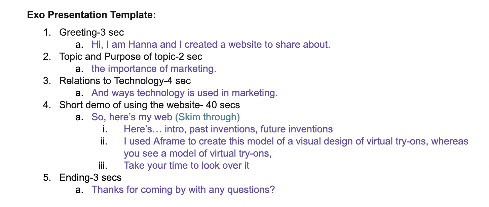

SEP10 Freedom Project

Context:
The purpose of my freedom project (code) involves spreading awareness of the use of technology in marketing, ways technology improves marketing.
Content:
After we had completed our website, we created a presentation based on our website as well as the process of creation. And for our website, we presented it to judges at our expo elevator pitch.
Here’s my structure for my elevator pitch presentation:
During this expo elevator pitch, I was given feedback to put text on a plain background so it’s easy for users to use. Also to check my grammar mistakes. While in our class presentation, I received feedback on explanations for process, code, and conclusion. So these are all things that should be included in future presentations which I’m keeping in mind.
Reflection:
From this year long project, I have learnt about how I can combine all the languages I learnt this year too create a big project along with a new tool, in my case A-Frame . This project movitated me to study and research more about Marketing and ways technology has been used which influenced me to think of future possibilites with technology use in Marketing.